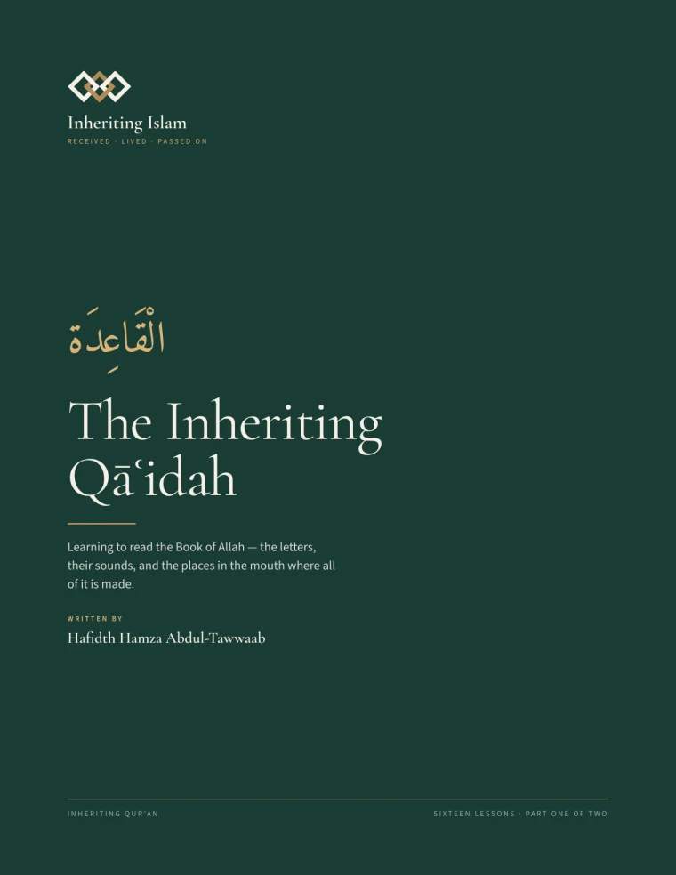

Book one · reading
The Inheriting Qāʿidah
From not recognising a letter to reading unseen text aloud. Sixteen lessons across the letters, joining, and fluency — then drills, which are most of the book, because a qāʿidah is mostly repetitions.
The drill words are deliberately invented rather than Qurʾānic, so a student who knows Juz ʿAmma by heart has to actually read them instead of recognising them. Every shape in them is one that occurs in the juz; the build refuses to print a join no reader would ever meet.
70 pages16 lessonsPDF · 1.3 MB
The Inheriting Qāʿidah
PDF · print ready · free